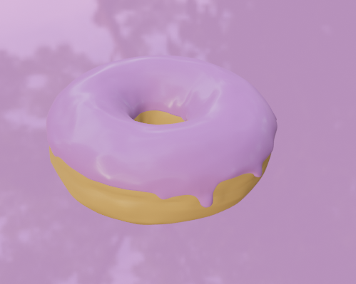
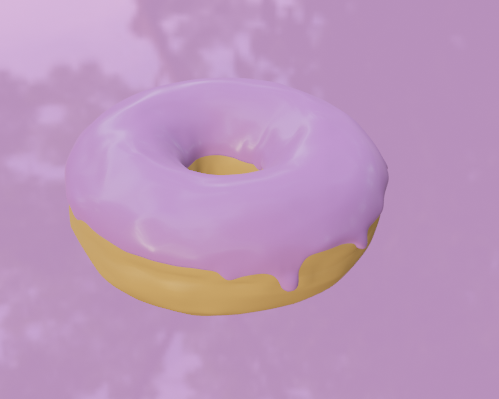

I embarked on creating my first website by following an in-depth
tutorial that took me over 30-40+ hours to complete. This extensive
process helped me develop a strong understanding of HTML and CSS,
which ignited my interest in web development and coding. The tutorial
was based on the OMNI Foods website, and I took the opportunity to
customize the layout and design to better suit my vision. Through this
project, I gained hands-on experience in web design, problem-solving,
and learning how to manipulate code to achieve a desired aesthetic and
functionality. It was a rewarding experience that sparked my passion
for further exploring the world of web development.
 
